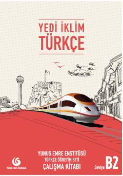

YİTurk tilini B2 darajasida o'rganuvchilar uchun amaliy mashqlar kitobi.
Yunus Emre Enstitüsü tomonidan chet tili sifatida turk tilini o'rganuvchilar uchun tayyorlangan B2 darajasidagi amaliy mashqlar kitobi. Ushbu qo'llanma o'quvchilarning tinglab tushunish, o'qish, yozish va gapirish ko'nikmalarini rivojlantirishga qaratilgan turli topshiriqlarni o'z ichiga oladi.